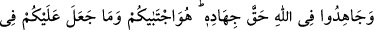

“Kurtuluşa eresiniz” yani kurtuluş ümidi ile bütün bunları yapın. Ancak amellerinize
güvenerek kurtuluşa ereceğiniz konusunda kesin emin olmayın.
Şeyh Sa‘dî (k.s.) der ki:
Sermaye getirmedim, ancak ümid getirdim
Ey Allah’ım! Beni affından ümidsiz eyleme
“
”, zafer ve arzuya erişmek demektir. Bu da dünyevî ve uhrevî olmak üzere iki
çeşittir Dünyevî felâh, kendileriyle dünya hayatının hoş olduğu mutluluklardır. Bunlar
uzun ömür (bakâ), zenginlik, izzet/şeref ve ilimdir. Uhrevî felâh dört şeydir: Fenâsı
olmayan bakâ, fakirliği olmayan zenginlik, hakirliği olmayan izzet ve şeref, bilgisizliği
olmayan ilim. Onun için: “Gerçek hayat, âhiret hayatıdır.” denilmiştir.
Sakın ola ki dünyanın sebeplerine gönül bağlama.
İmam Şâfiî ve Ahmed b. Hanbel (r.h.)’a göre bu âyetin içinde açıkça secde edilmesi
emredildiğinden secde âyeti olduğu söylenmiştir. Kâşifî der ki: “Bu secdede ihtilâf
vardır. İmam Şafiî’nin mezhebine göre Kur’an’daki secdelerin yedincisidir. Hazret-i
Şeyh buna “Secdetü’l-felâh” demiştir.” İmam A‘zam ve İmam Mâlik ise âyette
secdenin rukû ile birlikte zikredilmesinin burada kasdedilenin namaz secdesi olduğuna
delâlet ettiğini söylemişlerdir.
et-Te’vîlâtü’n-Necmiyye’de der ki: “Ey îmân edenler…” âyeti insaniyetin kıyamdaki
tekebbüründen, hayvanlardaki huşûun tevâzuuna dönmeye işâret etmektedir. Çünkü
hayvanlar dört ayak üzere rükû halindedirler. Nitekim Allah: “Onlardan kimi dört
ayağı üzerinde yürür.” (en-Nûr, 24/45) buyurur. Yine rükûdan secdedeki bitkilere
mahsus inkisar/kırıklık ve tevâzu haline dönmeye işârettir. Çünkü “Bitkiler ve ağaçlar
(Hâlika) secde ederler.” (er-Rahman, 55/6) âyetine göre bitkiler secde hâlindedir.
Çünkü rûhun ruhlar aleminden gelişi bu menzillerle olmuştur. O nebâtî menzile, sonra
hayvânî menzile, oradan da insânî menzile ulaşmıştır. Hazret-i Hakk’a döndüğünde bu
menzillerin hepsini geçip dolaşmış olur. Hz. Peygamber (s.a.)’in “Namaz mü’minin
miracıdır.”[55] hadîsinin sırrı da budur.
Sonra Allah şöyle buyurdu: Sırf Allah rızası için bu dönüşle “Rabbinize ibadet
edin;” bütün hallerinizde ve bütün hayır işlerde Allah’a yönelerek “hayır işleyin ki” bu
menziller üzere nefsânî karanlıkların ve rûhânî nurların perdelerinden geçerek
“kurtuluşa eresiniz.”